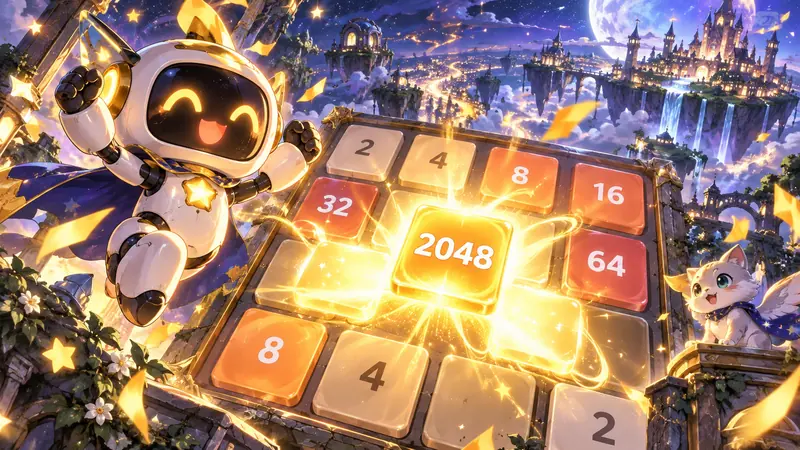
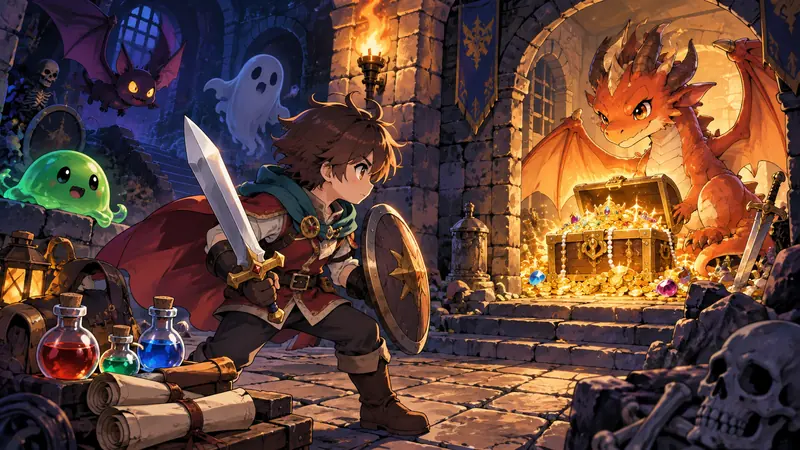
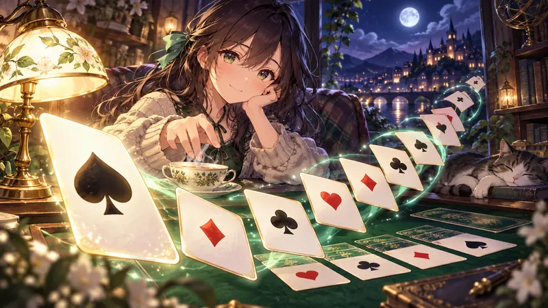
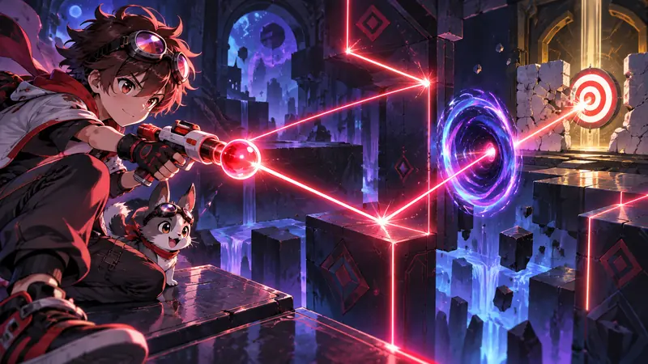

LUDOT MAGAZINE
遊ぶ、わかる、
作ってみたくなる。
つまずく場所には、たいてい理由があります。編集部がゲームの中身を確かめて、数字と手順で書いた攻略ノートです。次の1回で試せる考え方に加え、保存の仕組みや小さなゲームの作り方も届けます。
16本の記事
はじめて遊ぶ方はゲームの選び方・操作・保存データのガイドへ。記事の誤りはお問い合わせからお知らせください。
ALL STORIES
ルドット攻略ノート
ネタバレになるところは、見出しでわかるようにしています。

遊び方同じ「保存」でも残るものが違う｜ルドットの記録と再開を確かめる
2048・リバーシ・ぜんぶつけての保存内容を実装から比較。お気に入りと途中セーブの違い、記録を消す前の確認、端末を替えるときの注意をまとめます。
続きを読む →反転パズルを作るときの考え方｜「ぜんぶつけて」から学ぶ状態とテスト
盤面と見た目を分ける、端で折り返さない、解ける問題を逆算して作る。ルドットの反転パズルを例に、初めてのゲーム制作で確かめたい性質を解説します。
続きを読む →ぜんぶつけて攻略｜同じマスは2回押すと元に戻る
5×5のライトパズルを、反転の性質から考えるガイド。特別マスの違い、戻すとヒント、星3つの条件を実装に沿って解説します。
続きを読む →でんしゃのポイント攻略｜切りかえは電車が来る前に
電車の色と駅のマークを見て経路を準備。全20ステージのルール、速い電車との衝突、星3つの条件、キーボード操作を実装に沿って解説します。
続きを読む →2048は下と左の2方向で進める 『そろえて2048』で角を守る動かし方
無料ブラウザゲーム『そろえて2048』の攻略です。新しいタイルは2が90％・4が10％、合体は1手に1回まで。この決まりをもとに、大きい数を角に固定する方法、動かす方向の優先順位、詰まりかけたときの立て直しを説明します。
続きを読む →大富豪は序盤のAで場を取る 『よふかし大富豪』のルール一覧とCPUに勝つ出し方
『よふかし大富豪』で使われている大富豪のルールを、ゲームの中身で確かめて一覧にしました。8切り・革命・スペ3返しの動き、順位と点数、CPUが2やジョーカーを出さない条件、手札を出す順番をまとめています。
続きを読む →箱押しパズルは「押す前」に詰みが決まる 『はこはこ倉庫』全15面の考え方
箱押しパズル『はこはこ倉庫』全15面の解き方。角・壁ぎわ・2つ並びという戻せない形の見分け方、ゴールから逆に考える手順、奥のゴールから埋める順番、★3になる手数を、ゲームのしくみに沿って説明します。
続きを読む →
攻略剣は地下3・6・9階にある 『ひとくちダンジョン』をドラゴンまで進める手順
ターン制ダンジョンRPG『ひとくちダンジョン』の攻略。剣が必ず落ちている階、敵7種類のHPとこうげき、くすりの回復量、地下10階のドラゴンの炎をよける手順を、ゲームの中身を調べた数字でまとめました。
続きを読む →マインスイーパーで手が止まらなくなる数字の読み方 『ドキドキスイーパー』編
無料ブラウザゲーム『ドキドキスイーパー』で、マインスイーパーの数字の読み方を説明します。3レベルの盤とじらいの数、スマホの長押しではたを立てる操作、数字タップでまとめて開く「コード」、確定で開けられる形をまとめました。
続きを読む →お絵かきロジックは引き算で最初の1マスが決まる 『ドットのひみつ』の解き方
無料ブラウザゲーム『ドットのひみつ』全33問（5×5・8×8・10×10）を例に、お絵かきロジック（ノノグラム）の数字の読み方、かならずぬれるマスの計算、×の打ち方、行と列を見る順番を説明します。
続きを読む →リバーシは序盤に取りすぎない 『くるりんリバーシ』CPUに勝つ打ち方
無料ブラウザゲーム『くるりんリバーシ』でCPUに勝つ打ち方を、ゲームの中身を確かめて説明します。角・角のとなり・辺のあつかい、序盤に石を取りすぎない理由、終盤の残りマスの数え方がわかります。
続きを読む →
攻略ソリティアは山札をめくる前が勝負 『ひといきソリティア』で詰まらない順番
『ひといきソリティア』はクロンダイクの1枚めくりで、山札のめくり直しは何回でもできます。最初に見る3か所、裏向きの多い列を先にくずす理由、キングと空き列の使い方、詰まったときに試す4つの順番を説明します。
続きを読む →親子で遊ぶ無料ゲームは「終わり方」で選ぶ 年齢表示より先に見る6つのこと
親子で無料ブラウザゲームを選ぶときに見る6つのこと。年齢の目安、操作の数、1回の区切り、音、対戦のハンデ、広告の見分けやすさを、ルドットのゲームを例に紹介します。
続きを読む →
攻略反射パズルは1発目を観察に使う 『リコシェ・ワン』全10面の照準線の読み方
反射パズル『リコシェ・ワン』全10面の考え方。弾は1面3〜5発、反射は8回まで。照準線に出る範囲、動く壁を撃つタイミング、ワープ・ボタン・重力の決まりを、面の答えを書かずに説明します。
続きを読む →強い人はキーボードで遊ぶ 『よふかしホッケー』親子で接戦になるエアホッケー
エアホッケー『よふかしホッケー』の遊び方。5点先取、指とキーボードで変わるマレットの速さ、ラリー14回でパックの上限が1.5倍になる決まり、CPU3段階のちがい、親子で実力差があるときの工夫を説明します。
続きを読む →最初の宝箱まで15歩 『よふかしクエスト』でよるのおうに勝つ育て方と道順
無料ミニRPG『よふかしクエスト』の攻略記事。最初に取る宝箱の場所、敵ごとのHPと経験値、暗い洞窟の道順、ボス「よるのおう」に何レベルで何ターンかかるかを、ゲームの数字で説明します。
続きを読む →